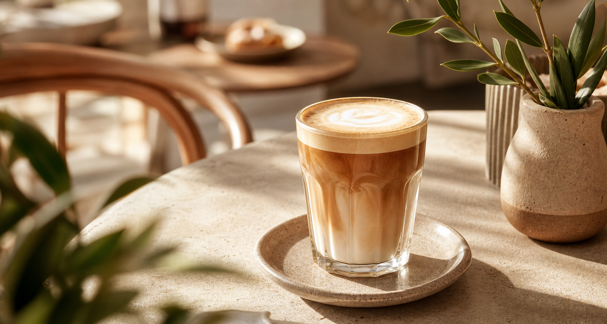
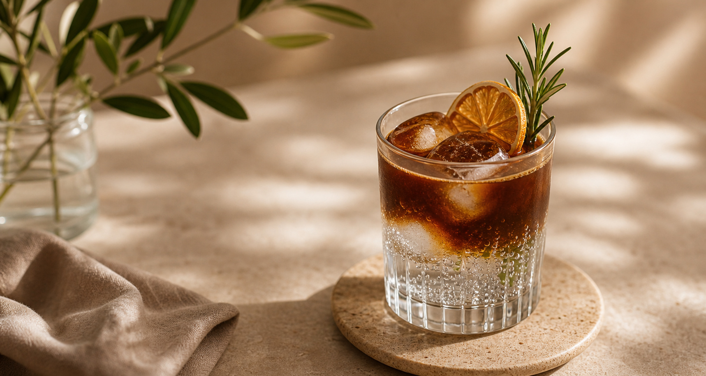
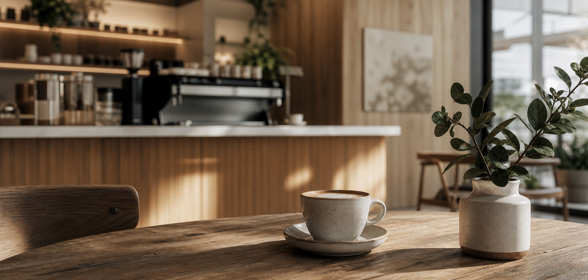
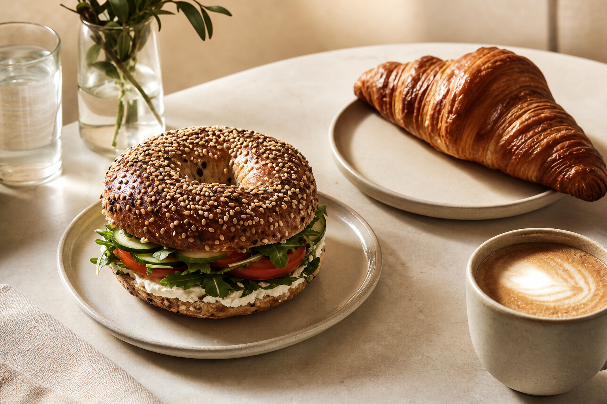
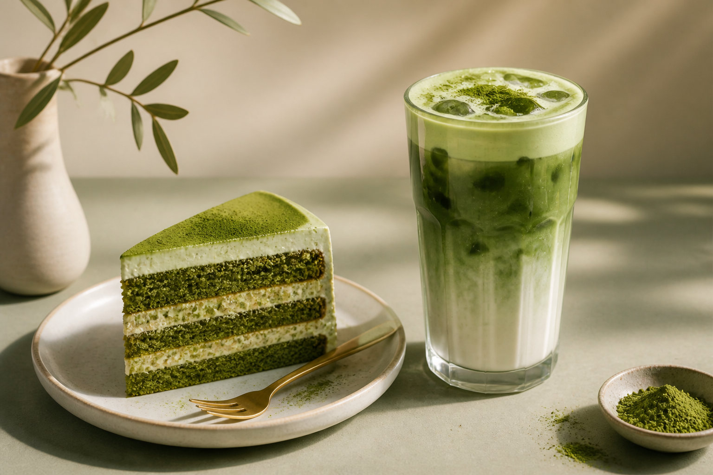
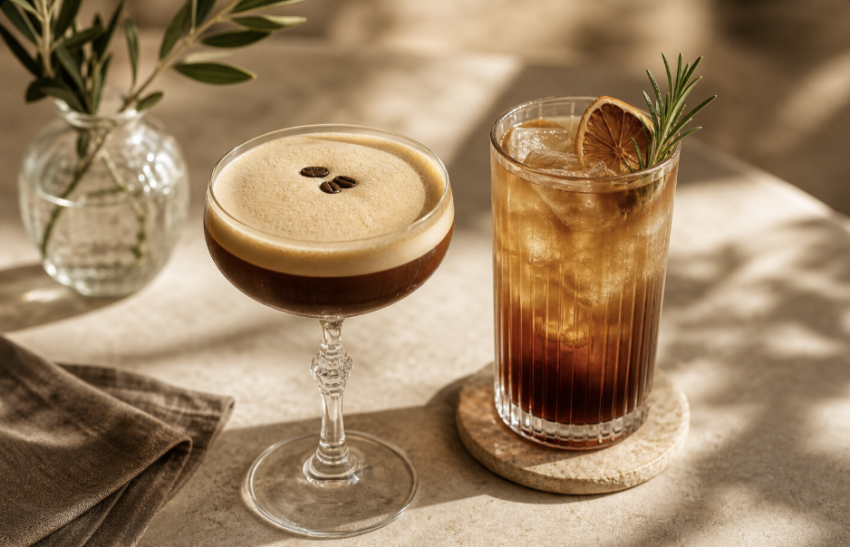
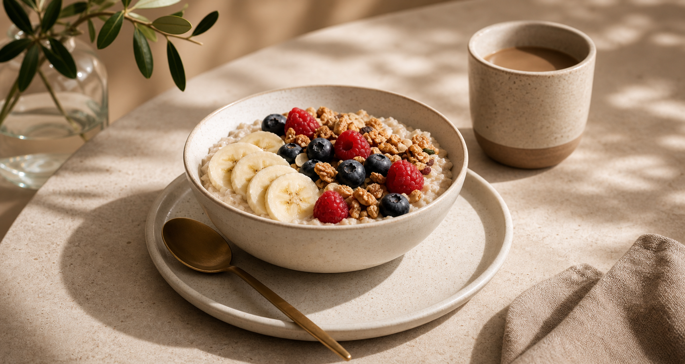

House Blend Cappuccino
Kräftig, samtig und mit feinporigem Milchschaum serviert.
3,80 €Specialty Coffee in warmem Premium-Design
Frisch gerösteter Kaffee, handgefertigte Bagels, saisonale Signatures
und ein Ort für fokussierte Arbeit, entspannte Gespräche und kleine Auszeiten im Alltag.
Espresso, Kirschsirup, Hafermilch und cremiger Cold Foam.
Fotowelt
Warmes Licht, natürliche Farben und echte Produktmomente bringen Atmosphäre in die Seite und geben Getränken, Snacks und Specials mehr Präsenz.







Unsere Story
Bean & Bark verbindet präzise Kaffeezubereitung mit einem einladenden, urbanen Raumgefühl. Wir setzen auf ehrliche Zutaten, kurze Wege und ein Erlebnis, das morgens genauso gut funktioniert wie am Abend.
Das Ergebnis ist ein Ort, an dem Gäste nicht nur schnell etwas holen, sondern gern bleiben, arbeiten, lesen oder sich mit Freunden treffen.
Nachhaltigkeit
Mehrwegbecher, pflanzenbasierte Milchalternativen, regionale Partner und sorgfältig geplante Warenströme sind Teil unseres Alltags.
Frische Lieferung am Morgen, kurze Wege und konstant hohe Produktqualität.
Hafer-, Soja- und Mandeldrink ohne Aufpreis für mehr Flexibilität und Komfort.
Bestellungen zum Mitnehmen werden in langlebige, nachhaltigere Verpackungen gesetzt.
Standorte
Beispielhafte Locations mit klaren Öffnungszeiten, Außenplätzen und schnellem Take-away-Service.
Torstraße 92, 10119 Berlin
Eppendorfer Weg 181, 20253 Hamburg
Fraunhoferstraße 28, 80469 München
Stimmen aus dem Alltag
“Elegant, ruhig und trotzdem lebendig. Genau so sollte ein moderner Coffee Shop wirken.”Lena M., Design Lead
“Guter Kaffee, schneller Service und genug Platz für einen ganzen Arbeitstag.”Tom K., Freelancer
Kontakt
Für Meetings, Events und größere Bestellungen planen wir individuell. Schreib uns oder ruf direkt an.